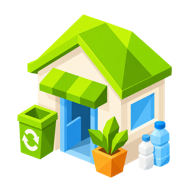
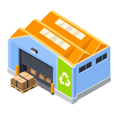

2 pengepul terverifikasi melayani Kec. Beji

Bank Sampah Hijau Lestari
Lapak di Kukusan, Beji · Satu kecamatan
★ 4.8 · Jemput · Antar Sendiri
Rp 500–8.000/kg
Plastik, Kertas, Logam, Kaca

CV Daur Jaya
Lapak di Depok Jaya, Pancoran Mas · Kecamatan lain
Belum ada rating · Jemput · Antar Sendiri
Rp 2.200–15.000/kg
Plastik, Kertas, Logam, Elektronik Bekas